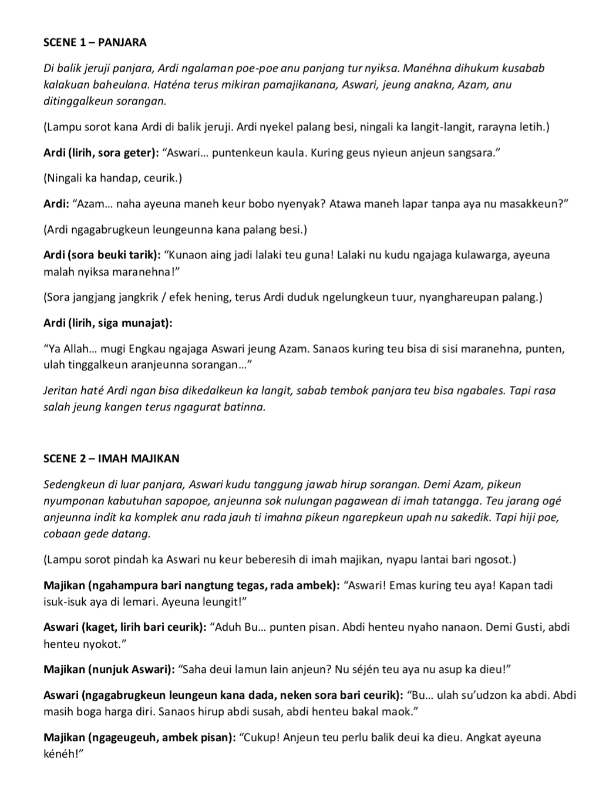

SCENE 1 – PANJARA
Di balik jeruji panjara, Ardi ngalaman poe-poe anu panjang tur nyiksa. Manéhna dihukum kusabab
kalakuan baheulana. Haténa terus mikiran pamajikanana, Aswari, jeung anakna, Azam, anu
ditinggalkeun sorangan.
(Lampu sorot kana Ardi di balik jeruji. Ardi nyekel palang besi, ningali ka langit-langit, rarayna letih.)
Ardi (lirih, sora geter): “Aswari… puntenkeun kaula. Kuring geus nyieun anjeun sangsara.”
(Ningali ka handap, ceurik.)
Ardi: “Azam… naha ayeuna maneh keur bobo nyenyak? Atawa maneh lapar tanpa aya nu masakkeun?”
(Ardi ngagabrugkeun leungeunna kana palang besi.)
Ardi (sora beuki tarik): “Kunaon aing jadi lalaki teu guna! Lalaki nu kudu ngajaga kulawarga, ayeuna
malah nyiksa maranehna!”
(Sora jangjang jangkrik / efek hening, terus Ardi duduk ngelungkeun tuur, nyanghareupan palang.)
Ardi (lirih, siga munajat):
“Ya Allah… mugi Engkau ngajaga Aswari jeung Azam. Sanaos kuring teu bisa di sisi maranehna, punten,
ulah tinggalkeun aranjeunna sorangan…”
Jeritan haté Ardi ngan bisa dikedalkeun ka langit, sabab tembok panjara teu bisa ngabales. Tapi rasa
salah jeung kangen terus ngagurat batinna.
SCENE 2 – IMAH MAJIKAN
Sedengkeun di luar panjara, Aswari kudu tanggung jawab hirup sorangan. Demi Azam, pikeun
nyumponan kabutuhan sapopoe, anjeunna sok nulungan pagawean di imah tatangga. Teu jarang ogé
anjeunna indit ka komplek anu rada jauh ti imahna pikeun ngarepkeun upah nu sakedik. Tapi hiji poe,
cobaan gede datang.
(Lampu sorot pindah ka Aswari nu keur beberesih di imah majikan, nyapu lantai bari ngosot.)
Majikan (ngahampura bari nangtung tegas, rada ambek): “Aswari! Emas kuring teu aya! Kapan tadi
isuk-isuk aya di lemari. Ayeuna leungit!”
Aswari (kaget, lirih bari ceurik): “Aduh Bu… punten pisan. Abdi henteu nyaho nanaon. Demi Gusti, abdi
henteu nyokot.”
Majikan (nunjuk Aswari): “Saha deui lamun lain anjeun? Nu séjén teu aya nu asup ka dieu!”
Aswari (ngagabrugkeun leungeun kana dada, neken sora bari ceurik): “Bu… ulah su’udzon ka abdi. Abdi
masih boga harga diri. Sanaos hirup abdi susah, abdi henteu bakal maok.”
Majikan (ngageugeuh, ambek pisan): “Cukup! Anjeun teu perlu balik deui ka dieu. Angkat ayeuna
kénéh!
